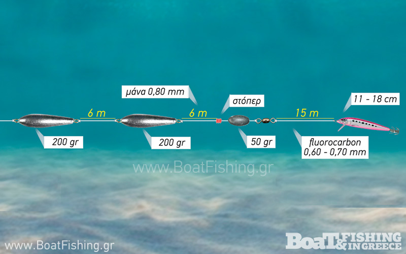

Συρτές

Τι είναι η συρτή
Η συρτή είναι τεχνική ψαρέματος όπου ένα ή περισσότερα δολώματα (ζωντανά, νωπά ή τεχνητά) σέρνονται πίσω από κινούμενο σκάφος σε συγκεκριμένη ταχύτητα, ώστε να μιμούνται ψάρια που κολυμπούν. Ο στόχος είναι να καλυφθεί μεγάλη επιφάνεια θάλασσας και να εντοπιστούν αρπακτικά που κυνηγούν σε μεσόνερα ή κοντά στην επιφάνεια.
Εξοπλισμός
Στη συρτή χρησιμοποιούνται καλάμια μεσαίας ή μεγάλης δύναμης, μηχανισμοί με μεγάλη χωρητικότητα πετονιάς ή νήματος και ειδικές αρματωσιές με τεχνητά δολώματα ή ζωντανά/νωπά ψάρια. Το βάθος εργασίας ρυθμίζεται με βαρίδια, downriggers, diving plugs ή απλά με το μήκος της πετονιάς και την ταχύτητα του σκάφους.
Βασικοί τύποι συρτής
Κύριες κατηγορίες είναι η παράκτια συρτή (inshore) για λαβράκια, λίτσες, μαγιάτικα κ.ά., και η βαθειά/ανοιχτής θαλάσσης συρτή (offshore) για τόνους, ξιφίες και άλλα μεγάλα πελαγικά ψάρια. Η ταχύτητα κυμαίνεται συνήθως από 2–3 κόμβους για ζωντανά δολώματα μέχρι 6–8 κόμβους για μεγάλα τεχνητά, ανάλογα με τα είδη που στοχεύουμε.
Πώς δουλεύει η τεχνική
Αφού ανοιχτεί το σκάφος στην επιθυμητή περιοχή, τα δολώματα αφήνονται πίσω σε διαφορετικές αποστάσεις και ίσως σε διαφορετικά βάθη, ώστε να σχηματίζεται ένα «άπλωμα» (spread) που καλύπτει περισσότερη θάλασσα. Η πορεία του σκάφους δεν είναι πάντα ευθεία· μικρές αλλαγές σε ταχύτητα και κατεύθυνση κάνουν τα δολώματα να ανεβοκατεβαίνουν ή να αλλάζουν κίνηση, κάτι που συχνά προκαλεί επιθέσεις από τα αρπακτικά.